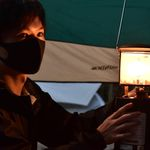

yagijin
よく登呂遺跡に出没します
| 現在 | Webエンジニア |
| 2021 | 名城大学大学院理工学研究科情報工学専攻 |
| 2019 | 名城大学 理工学部情報工学科 |
Reading 📕
シェル・ワンライナー160本ノックRecent Blogs 🗒
lolipopマネージドクラウドにrailsAPIモードでgraphqlAPIを用意する
#Rails
#Graphql
#Lolipop
lolipopマネージドクラウドでrails7のAPIモードでgraphql gemを使用して、graphqlAPIを用意します。
もっと見る
やりたいこと ✈️
もっと見る
その他コンテンツ 🍜< ズルズル
🍜 🐐